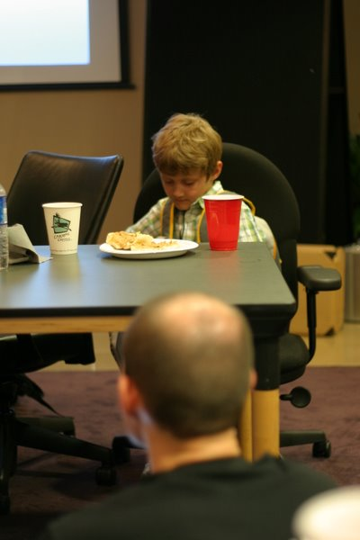
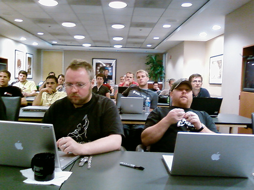

BarCamp DC Wrap Up

The first ever DC area BarCamp took place on Saturday, August 11th. A throng of area tech enthusiasts made their way to Fleishman-Hillard Inc. headquarters to partake in an unconference run entirely by it’s participants. There were so many interested attendees that many had to be turned away at the door. Wow! I guess the DC tech community has been secretly yearning for a BarCamp to pop up in the area. One of the attendees brought his son who has to be the youngest BarCamper ever.

The session sign up process was intense as everyone shimmied around the largest conference room in the building trying to cast their vote for the topics that were of the most interest to them. The room for my presentation on Firebug was even packed which made me feel good to have people interested in what I had to say. Though I prepared slides in advance, I didn’t use them. Instead I just walked through the various features of the free Firefox extension and the group had an open discussion about tricks to using the tool. Many developers never realized all of the CSS powers Firebug has and vice versa for CSS designers about script debugging capabilities. Many people later gave me praise for my session. I’m glad people could actually walk away from the conference with something they could use.
My favorite session that I attended was The Facebook Platform given by Nick O’Neill. Here, Nick ran down all the numbers of Facebook application popularity and came to the conclusion that Facebook apps are the next big thing. It was crazy hearing about some of the more popular apps having 1 million+ users. He runs a blog called AllFacebook.com discussing anything and everything related to Facebook and Facebook applications.
The rest of the sessions were documented fairly thoroughly on the BarCamp.org wiki as well as on Flickr. One thing I noticed was 95% of the attendees had Mac laptops and Canon digital cameras. This was also the largest gathering of iPhones outside of an Apple store and for the first time I got to play with one. On an unrelated note: it turns out my fingers are too big to type on the little tiny keyboard. I’m glad I skipped out on the whole iPhone craze.

After the conference everyone headed over to Cafe Asia for the BaCamp after party. I sat with Jared Goralnick from SetConsulting.com, Spencer Holleman, and Charlie Park. We discussed everything from podcasting to holding bunnies for ransom. It was good to meet some other tech related friends in the area.
I had a blast at BarCamp DC and can’t wait until they hold another one (I think I heard the next one would be in January), hopefully in a bigger space. I already know what my next topic will be. Another cool feature would be a group-wide chat channel so other BarCamp DC attendees could find others at the conference with the same specific interests. Hey, some of us are a little bashful in face-to-face settings. A big thanks goes out to the organizers for putting the event together.

Russell –
Thanks for the Firebug presentation, the conversation over sushi, and the shoutout. It was a lot of fun, and I’m looking forward to the next one. Hopefully, by then, I’ll be on a Mac, too.
Reply
[…] can read some other good conversation about BarCamp at Russell Heimlich’s blog, the Viget Blog, and many other sites. And you can find hundreds of pictures on flickr. See you all […]
Thanks for a great Firebug presentation–sorry you had to use a Windows laptop. I agree with your sentiments on the event–the DC tech community really benefited from this and I think this is going to be the start of something wonderful.
Keep up the blogging and good work!
Reply
[…] Russell Heimlich “There were so many interested attendees that many had to be turned away at the door. Wow! I guess the DC tech community has been secretly yearning for a BarCamp to pop up in the area… I had a blast at BarCamp DC and can’t wait until they hold another one (I think I heard the next one would be in January), hopefully in a bigger space. I already know what my next topic will be.” […]
http://flickr.com/photos/jgarber/1098429115/ How wierd, a guy in my flickr watch has a shot with the same guy.. the blurred guy on the bottom of your first photo is in this shot too. Maybe you are in one of his shots.
Reply
[…] Russell Heimlich: I had a blast at BarCamp DC and can’t wait until they hold another one […]
I’ve been going through all these flickr shots from this event. Looks fun. I wish I lived closer to things like this. My city is so devoid of any good tech, its hard enough to get a decent job in the industry. Plans on moving to Seattle area – perhaps that will help propel me into the industry a bit more.
Reply
[…] DC area is exploding with meetups and unconferences. First it was BarCamp DC in August, then PodCampDC at the end of April, and just this past weekend was SocialDevCamp East […]
[…] past weekend the second DC area BarCamp took place. Like last year’s event, a horde of local techies came out to teach one another and collaborate on new […]
[…] from BarCamp & […]
[…] Dummyimage.com was not like those other ideas.Fast forward to August 11th, 2007, when I attended my first Bar Camp in Washington DC. I had mentioned my dummy image idea to Jason Garber and Jeremy Carbaugh in passing. They said it […]